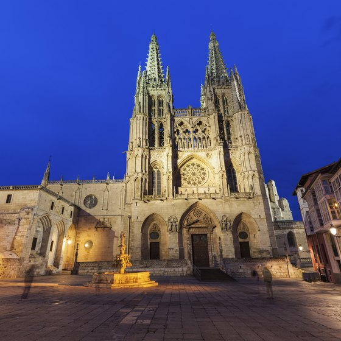

Alhambra
Ubicada en la cima de una colina en Granada, la Alhambra es un impresionante complejo de palacios y fortalezas que se erige como un testimonio del arte y la arquitectura morisca. Construido originalmente en el siglo XIII, muestra un intrincado trabajo de azulejos, exuberantes jardines e impresionantes patios. Entre las características más notables se encuentran el Palacio de los Leones con su emblemática fuente de leones y los jardines del Generalife que ofrecen una belleza serena. La Alhambra es Patrimonio de la Humanidad por la UNESCO, admirada en todo el mundo por su importancia histórica y su exquisita belleza. ¡Disfruta de tu exploración de uno de los monumentos más magníficos de España!
Sagrada Familia
La Sagrada Familia, ubicada en Barcelona, es una basílica icónica diseñada por el legendario arquitecto Antoni Gaudí. La construcción comenzó en 1882 y sigue sin terminarse. Este lugar, declarado Patrimonio de la Humanidad por la UNESCO, muestra la mezcla única de Gaudí de estilos gótico y art nouveau, con sus impresionantes fachadas, intrincadas esculturas e imponentes torres. El interior de la basílica es igualmente impresionante, con vibrantes vidrieras que crean un fascinante juego de luces. La Sagrada Familia es un testimonio del genio visionario de Gaudí y un hito de visita obligada en España. ¡Una verdadera maravilla del ingenio arquitectónico!

Palacio Real de Madrid
El Palacio Real de Madrid, conocido como Palacio Real, es la residencia oficial de la familia real española, aunque ahora se utiliza principalmente para ceremonias de estado. Situado en el corazón de Madrid, este gran palacio cuenta con más de 3.000 habitaciones llenas de tesoros artísticos, como pinturas, tapices y muebles antiguos. Su magnífica fachada, sus extensos jardines y sus lujosos interiores lo convierten en un impresionante ejemplo de arquitectura barroca. Abierto al público, el palacio ofrece una visión de la historia real y el opulento patrimonio de España.Los visitantes pueden maravillarse con el Salón del Trono, el Salón de los Espejos y la Armería Real, cada uno de los cuales se hace eco de la grandeza de la realeza española. ¡Un hito majestuoso que encarna el esplendor de España!
Plaza Mayor
La Plaza Mayor, situada en el vibrante centro de Madrid, es una gran plaza porticada llena de historia. Construido originalmente en el siglo XVII, ha servido como un bullicioso centro para mercados, festivales, corridas de toros e incluso ceremonias reales. Rodeada de elegantes edificios de tres pisos con frescos distintivos, la estatua central de la plaza del rey Felipe III se suma a su encanto real. La Plaza Mayor sigue siendo un hito cultural vital, que invita tanto a los lugareños como a los visitantes a sumergirse en el rico patrimonio de España. ¡Un lugar cautivador donde convergen la historia y la vida moderna!

Alcázar de Segovia
El Alcázar de Segovia es un impresionante castillo encaramado en un peñasco rocoso en Segovia, España. Con su apariencia de cuento de hadas, esta fortaleza ha servido como palacio real, academia militar y prisión estatal desde su construcción en el siglo XII. Famoso por su distintiva forma de barco y sus impresionantes torres, el Alcázar ofrece unas vistas impresionantes y una rica historia. Su intrincado interior, con grandes salones y hermosos murales, refleja su importancia como sede del poder. El Alcázar de Segovia sigue siendo un símbolo del patrimonio medieval y el esplendor arquitectónico de España. ¡Una fortaleza encantadora que realmente captura la imaginación!

La Giralda
La Giralda es el campanario de la Catedral de Sevilla en Sevilla, España. Originalmente construido como alminar de la Mezquita Mayor de Sevilla durante la dinastía almohade, fue convertido posteriormente en campanario tras la reconquista cristiana1. La torre presenta una mezcla de arquitectura islámica y renacentista, con un campanario de estilo renacentista añadido en el siglo XVI. La Giralda es Patrimonio de la Humanidad por la UNESCO y sigue siendo uno de los símbolos más importantes de Sevilla, ya que ofrece unas vistas impresionantes de la ciudad desde su cima1. ¡Una verdadera obra maestra de la historia de la arquitectura!

Catedral de Mallorca
La Catedral de Mallorca, también conocida como La Seu, es una impresionante catedral gótica situada en Palma de Mallorca, España. Construido entre los siglos XIII y XVI, se alza majestuoso en el paseo marítimo, ofreciendo impresionantes vistas del mar Mediterráneo. Su inmenso rosetón, uno de los más grandes del mundo, y la intrincada arquitectura gótica lo convierten en una obra maestra visual. El sereno interior de la catedral, adornado con hermosas capillas y tesoros artísticos, refleja su antigua importancia religiosa y su brillantez arquitectónica. ¡Un impresionante testimonio de la arquitectura gótica y la belleza espiritual!

Templo de Debod
El Templo de Debod, situado en Madrid, es un antiguo templo egipcio que data del siglo II a.C. Donado a España por Egipto en 1968 como muestra de gratitud por la ayuda de España para salvar los monumentos de Nubia, el templo fue cuidadosamente reconstruido en el Parque del Oeste. Este templo bien conservado, dedicado a los dioses Amón e Isis, ofrece a los visitantes una visión única de la arquitectura y la historia del antiguo Egipto en el corazón de Madrid. Al atardecer, el templo se ilumina bellamente, creando un ambiente mágico que cautiva a los visitantes. ¡Una joya serena e histórica en la bulliciosa ciudad!

Catedral de Seville
La Catedral de Sevilla, también conocida como Catedral de Sevilla, es la catedral gótica más grande del mundo y Patrimonio de la Humanidad por la UNESCO. Construida a principios del siglo XVI, se levanta sobre una antigua mezquita, conservando el minarete que ahora se conoce como La Giralda. La catedral es famosa por su vasto interior, sus impresionantes capillas y su rica colección de arte. También alberga la tumba de Cristóbal Colón. Su majestuosa arquitectura gótica y su importancia histórica lo convierten en un monumento de visita obligada en España. ¡Un impresionante símbolo del patrimonio y la grandeza de Sevilla!

Catedral de Burgos
La Catedral de Burgos, ubicada en Burgos, España, es un impresionante ejemplo de arquitectura gótica y Patrimonio de la Humanidad de la UNESCO. Su construcción comenzó en 1221 y continuó a lo largo de varios siglos, dando como resultado una rica mezcla de estilos. La catedral es famosa por sus majestuosas agujas, sus intrincadas fachadas y sus hermosas vidrieras. En su interior, alberga una impresionante colección de arte religioso, como la ornamentada Escalera Dorada y la tumba del Cid, el legendario héroe de España. La Catedral de Burgos es un testimonio del patrimonio artístico y cultural de España. ¡Una verdadera joya arquitectónica que encanta a todos los que la visitan!
